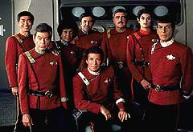
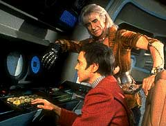
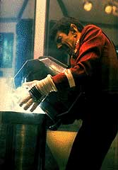
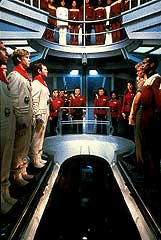

|
Da
Terra Desconhecida Ira de Khan
 "Jornada
nas Estrelas II: A Ira de Khan" mais do que a simples
continuao da aventura da tripulao da Enterprise no cinema.
H muitas diferenas, to visveis quanto o uniforme vermelho
e preto usado a partir de ento. "Jornada
nas Estrelas II: A Ira de Khan" mais do que a simples
continuao da aventura da tripulao da Enterprise no cinema.
H muitas diferenas, to visveis quanto o uniforme vermelho
e preto usado a partir de ento.
Se o primeiro filme teve de enfrentar o desafio quase indito da
adaptao de um seriado de TV pra o cinema (com exceo de uma
verso antiga de "Batman"), o segundo filme marcou de
vez a certeza da viabilidade deste tipo de projeto, dando
continuidade ou aprofundando temas e personagens apresentados
anteriormente.
O bom e velho Ricardo Moltanban, no papel de Khan Noonian Singh,
procura se vingar de Kirk por t-lo deixado no planeta Ceti Alfa
5 e se apropriar do Projeto Gnese, desenvolvido pela Federao
para experimentar a criao de vida em lugares inspitos.
 O
primeiro ttulo foi "A vingana de Khan", mas isto
soava mal aos ouvidos mais sensveis, da a mudana para o ttulo
conhecido. A histria no episdio "Sementes do Espao"
de C. Wilber, garantiu a janela que foi tocada adiante por Harve
Bennett e Nicholas Meyer.
Alguns apostam que eles no assistiam sempre a srie original,
mas apenas um ou outro episdio isolado. Bennett teve que fazer o
dever de casa e assistir aos setenta e nove episdios da Srie
Clssica para julgar se e como deveria aproveitar a dinmica
original.
At porque, desse modo, ele se sentiria mais seguro para
desenvolver o projeto, mesmo tendo sido o responsvel por dois
sucessos na TV: "O Homem de Seis Milhes de Dlares" e
"A Mulher Binica". Para o estdio, Bennett tinha uma
outra virtude muito importante.
Ele sabia fazer o melhor possvel sem gastar muito. O diretor
Nick Meyer s assistiu Srie Clssica depois de ter sido
cogitado para fazer parte da equipe.
Gene Roddenberry continuou firme e forte brigando pela sua criao.
Sua pretenso era uma histria sobre volta no tempo para tentar
impedir o assassinato do presidente Kennedy. Foi recusada, mas ele
insistiu nisso ao longo dos futuros filmes, mandando seus
memorandos para Bennett.
Estes memorandos faziam restries e sugestes. A polmica
maior ficava por conta da militarizao de Jornada. Roddenberry
insistia que a Frota no era militar e que no queria ver cenas
de violncia sendo multiplicadas na sua obra porque ela era
pacifista.
 Bennett
contestava, dizendo que a estrutura da Frota Estelar era a da
Marinha dos EUA e a de quaisquer Marinhas do mundo. A Enterprise
era, basicamente, um navio no espao. Sobre guerras, isso estava
implcito e a violncia explcita no seriado, mesmo que fossem
o timo recurso a ser usado nos episdios da TV.
Dentre as propostas feitas, pensou-se desde um romance entre David
e Saavik at a apario de seres monstruosos e fantasmagricos.
Quando Meyer finalmente apresentou o roteiro, depois de vrias
tentativas e colaboraes, houve uma avalanche de cartas dos fs
para o estdio, pois souberam que Spock morreriam logo no incio
do filme.
Esta notcia, guardada a sete chaves, vazou provavelmente pela
iniciativa de Roddenberry. A equipe de produo teve que mudar
de idia e a "morte" foi contornada pela onda criadora
do Projeto Gnese no prximo filme. Nimoy j no queria fazer
Spock, mas deixou uma porta aberta, caso mudasse de idia.
Barry Diller, o chefo da Paramount, pressionou para Spock no
morrer, fazendo coro com Roddenberry, apesar das resistncias de
Meyer. Pelo menos, houve algo em comum a todos os envolvidos:
fazer mais uma vez alguma coisa parecida com as aventuras de
"Horatio Hornblower" no espao.
O personagem de C. S. Forester destemido, herico e com um
grande senso de justia e moral; do mesmo modo Kirk foi concebido
por Roddenberry. Como disse Nick Meyer, era juntar isso com uma
histria sobre amizade, envelhecimento, morte e luta contra um
vilo forte, inteligente e com muita densidade dramtica.
 Tudo
estava pronto para "Jornada nas Estrelas II: A Terra
Desconhecida", em homenagem influncia de Hamlet (de
Sheakspeare) no roteiro. O nome s foi mudado por presso dos
executivos da Paramount, e s no virou "A Vingana de
Khan" porque este seria o termo usado no terceiro filme da
saga "Guerra nas Estrelas", mudado no fim para "O
Retorno de Jedi", pelo prprio George Lucas. O ttulo
inicial, como se sabe, ficou sendo o do filme VI.
Do que ficou estabelecido, vimos, no incio, a apresentao de
Saavik como uma nova promessa vulcana na Frota Estelar, aprendendo
a comandar atravs do simulador do teste do Kobayashi Maru,
embora as estrelas de primeira grandeza continuem sendo Kirk,
Spock e McCoy, recuperando o tipo de relacionamento bem-sucedido
que marcou o seriado.
Kirk est impossvel! Reencontra a ex-namorada, retoma o comando
da nave, conhece o seu filho brigando com ele, derrota o seu
arquiinimigo Khan e perde um dos seus melhores amigos. S faltou
mesmo detonar uma nave klingon, mas, no final de tudo, ainda
confessa que se sente jovem. E olha que no incio do filme, ele j
havia dito a McCoy que a explorao da galxia coisa para
jovens!
Spock "morreu" duas vezes, resolveu treinar uma nova
tripulao de jovens, dialogou com Kirk se dizendo sem ego para
ser magoado por perder o comando, citando um dos mais famosos
ditados vulcanos, e em nome disso, age para salvar a sua nave e
seus amigos. ele quem mais expressa o sentido da vida e da
morte com a citao de Charles Dickens: "Foi o momento
melhor e o momento pior".
McCoy continuou camarada como sempre, aconselhando o amigo Kirk e
guardando o "katra" de seu amigo Spock. Mantendo a sua
fama de mau-humorado, reclamou da mania do homem de querer tomar o
papel de Deus por causa do Projeto Gnese. E ainda sobrou tempo
para exercer um pouco melhor o seu papel de mdico ao curar os
feridos atacados por Khan.
Dos coadjuvantes, Chekov o de maior destaque, pois tornou-se o
imediato da Reliant do capito Farrell, e teve uma boa participao
na trama ao ser usado por Khan para tentar matar Kirk. O que no
d para engolir Khan reconhecer Chekov em Ceti-Alfa 6, j que
no episdio-base ele ainda nem fazia parte da Enterprise.
 Giancarlo,
um amigo nosso, arriscou dizer que Chekov estava estagiando em um
dos laboratrios da nave. Ser? A enfermeira Chapel no
conseguiu aprovao dos produtores para continuar na saga e
acabou virando a voz oficial dos computadores da Frota Estelar nos
filmes e nas outras sries; afinal de contas, se tratava de Majel
Barrett-Roddenberry, a mulher do "Criador".
Sulu e Scotty no fizeram mais do que o trivial e o "sim,
senhor" de sempre. Pelo menos Uhura voltou a exibir as suas
belas pernas. O pblico, a crtica e os fs gostaram muito. Da
para frente, o sucesso foi assegurado, dando boas perspectivas de
que esta seria uma jornada sem fim...
Cludio
Silveira escreve quinzenalmente sobre os filmes com
exclusividade para a Trek Brasilis
|